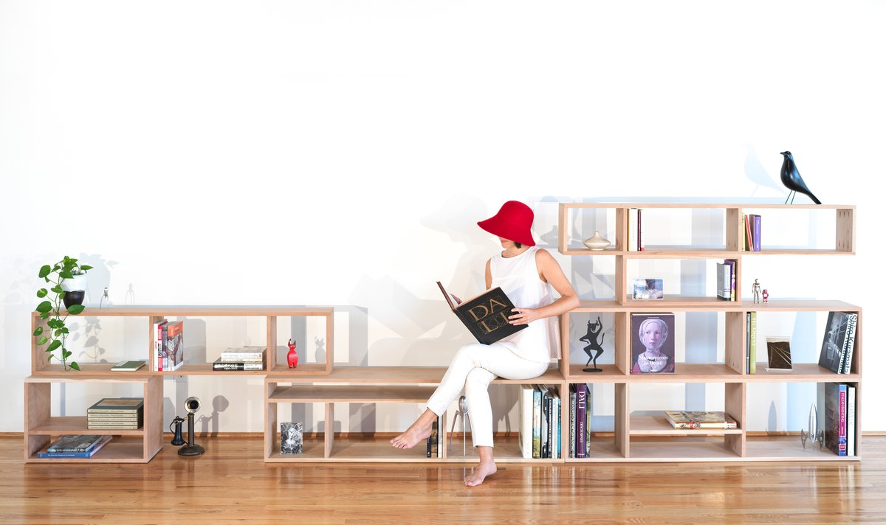
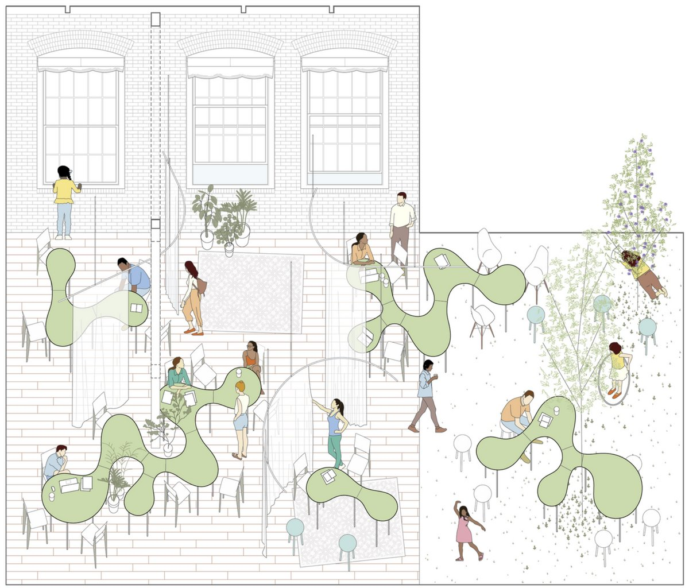

Custom furniture for your home. It adapts as life changes.
Start your projectCustom furniture that fits your home exactly — built to transform when you do.
Furniture designed for your space — and ready for your life tomorrow.

Modular · adaptable · transformable · multifunctional
7 modules, each with different dimensions, offer endless possibilities for creative combinations. They serve as kitchen space, a living room area, or co-working furniture; dividing a room or connecting and configuring an intimate atmosphere.
Made of sustainable wood. Inspired by the Japanese tokonoma — a structure in which items for artistic appreciation are displayed. The shelves turn into benches, chairs, even stairs, and tables to enjoy tea.
Full project →
Organic modular table + dancing curtains
An "infinite" and sinuous co-working table, whose modular condition makes it affordable while allowing countless configurations for working in small or large groups.
Inspired by Mies van der Rohe and Lilly Reich's "Café Samt & Seide" (1927), Bai-Bai features curtains that provide pockets of privacy. Customizable in colors and leg heights, anchored in high-quality plywood.
Full project →Furniture designed for the people and places that change fastest.
Furniture that fits your life, not the other way around.
Every piece is made for your exact space — and designed to transform when you do. Modular, adaptable, and built to last through every change.
Furniture that grows with your child.
Custom pieces that adapt to a child who changes fast — the low table that becomes a bench, the shelf that rises as they grow.
Adaptable furniture for joyful classrooms.
Flexible classrooms that transform with the activity — painting, reading, playing, working in groups.
Start your custom furniture project today.
Contact us